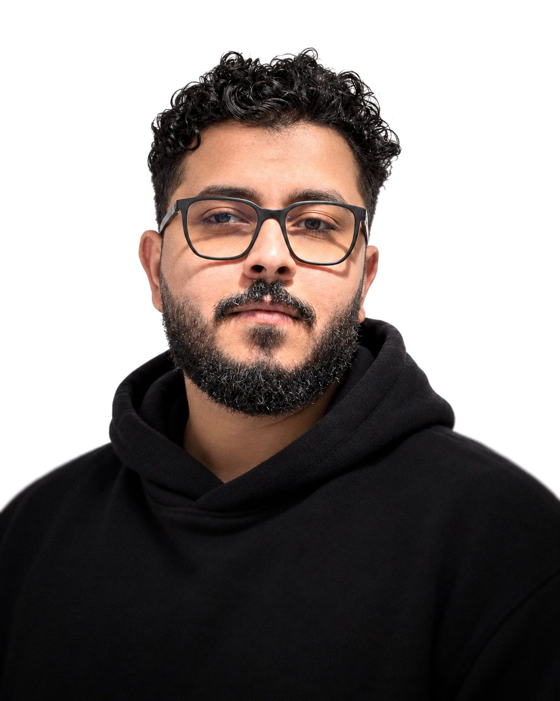

I started in television as a VFX artist, working on other people’s shots one frame at a time. Those years taught me how much a single second can hold.
Then came motion design and 3D. Over time, what I cared about most moved earlier in the process, to the idea itself and the reason a piece should exist.
Today I work as a creative director. I look for the idea worth making and stay with it until it reaches the screen. I still love the making.
This site is being built. Until it is ready, write to me.
Creative Director
